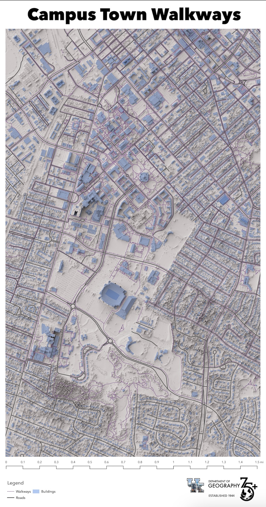
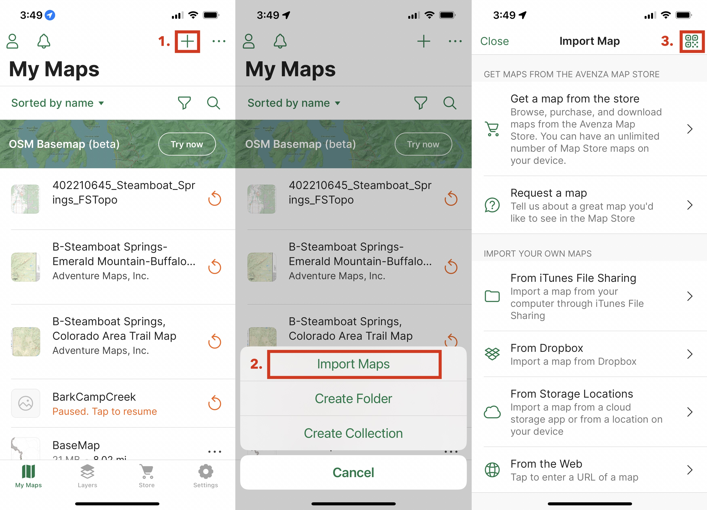
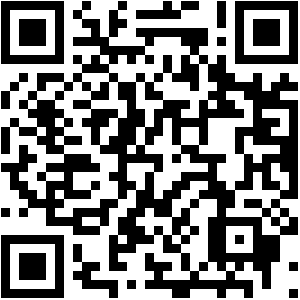
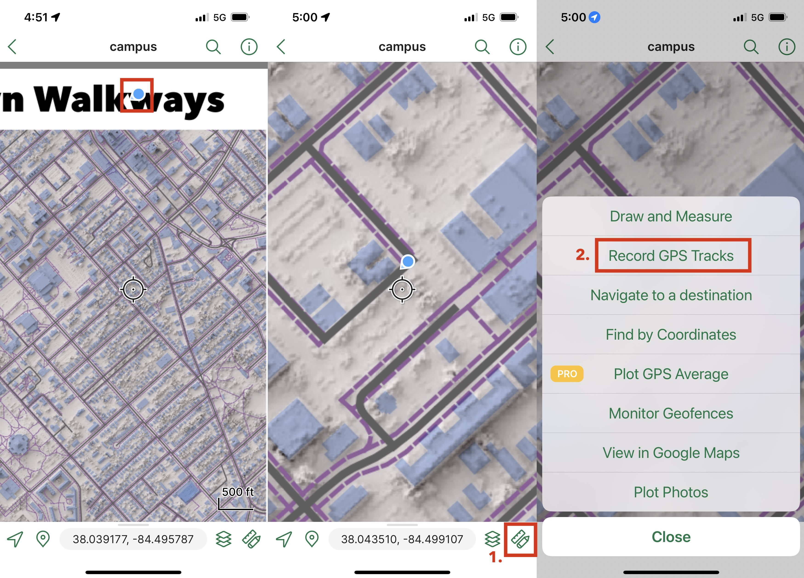
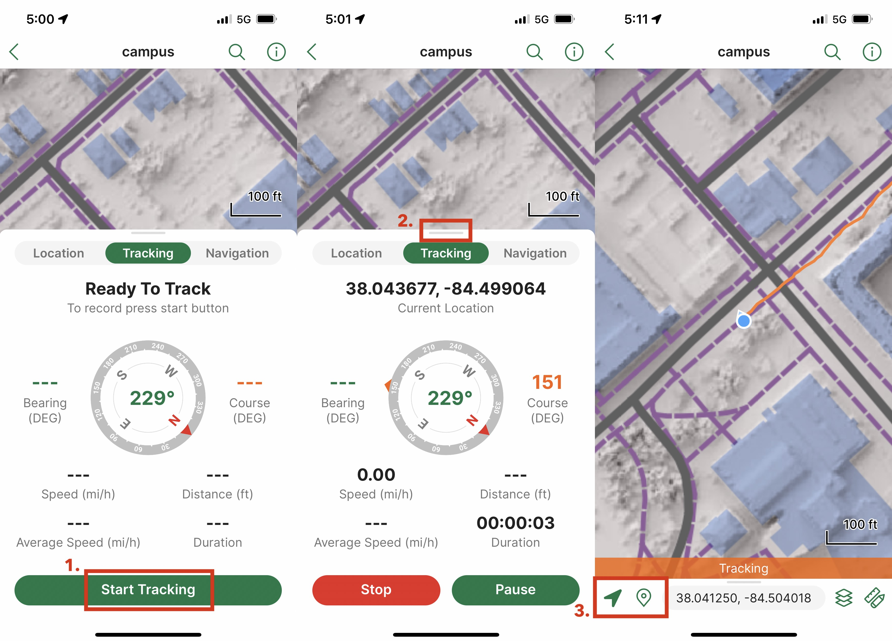
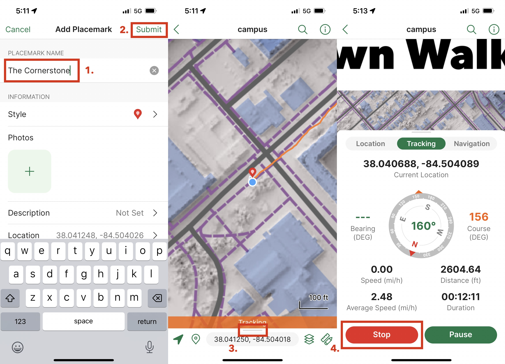
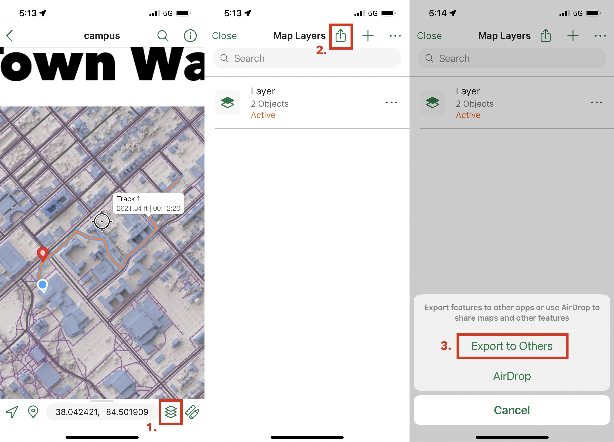
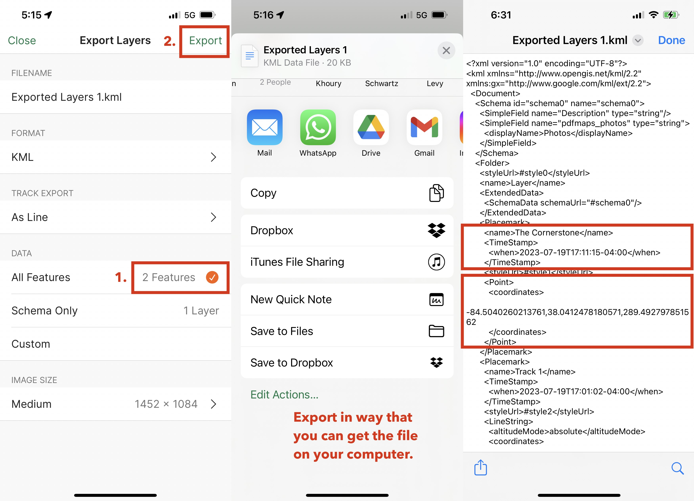
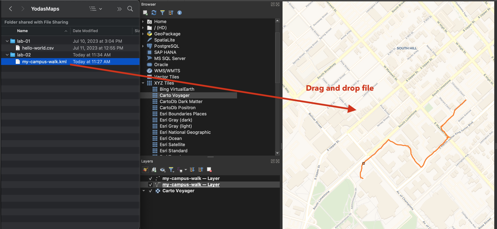

Presentation
Open in new tabWeek
Task
In this task, you will try to find virtual geocaches using a GPS receiver app on your mobile device’s web browser. A virtual geocache is usually a distinct or interesting feature in the landscape, like a scenic spot or sculpture, that you can find using a GPS and hints. If you find this task enjoyable, Geocaching.com is a popular website for hiding and finding all types of geocaches.
Before we had maps on our phones, GPS receivers gave our location in coordinate pairs – just numbers. We then used those coordinates to plot our location on a paper map. Those were fun times!
If we wanted to visit a distant location, we would enter the coordinates into our GPS receiver and follow a compass arrow and distance measurement to that location. There was no route to follow, just a direction and distance.
Let's get started with the task. Before you begin, make sure you can access the web via a browser on a mobile device and have enabled location services. You are encouraged to work with a partner: one person with a compass and the other a GPS.
Instructions
1. Open the web page contig.us/hawaii/uky-geocache/ in your mobile device's web browser.
2. Click on the Enable GPS. If the browser can access your device's GPS, you should get the current latitude, longitude, and estimate of accuracy on the next line.
3. The following line gives information about the nearest geocache. The Bearing readout tells you the compass direction.
4. Walk in that direction until the Distance readout is as low as you can make it. Hints to the virtual geocache will be given. If you think you know what it is, write it down.
5. When you think that you have found all geocaches, submit your answers on Canvas for your found geocaches. Make sure to include the Nearest Geocache readout for each response. Each correct answer will give you +1 point of extra credit.
Lab
In the previous lab we created data from observations on a map. In this lab, we will physically walk around campus and collect data using your mobile device. You are encouraged to work in teams to complete this lab.
Table of Contents
Introduction
One of the greatest joys of mapmaking is using the map in the field, a.k.a. in the area that the map represents. While you will not make a custom map in this lab, you will discover the process of using a custom maps on your mobile device. You will also learn how to collect data in the field and bring it back to your computer for additional mapmaking.
As we progress through the semester, you will eventually create your own maps that can be used on mobile devices. This lab will also expose you to a thriving marketplace for these types of maps – a marketplace that you could even sell your creations.
Mobile Mapping
We have all likely used a map on our mobile devices, whether it is to get directions from one location to another or to locate a place to eat. We probably have a couple of favorite apps to do this. While many apps are great, they are limited to the maps that they provide.
What if you wanted to use a map that you created? It’s not hard to imagine that after a semester of mapmaking, you’ll create a map that you’ll want to share and use. One app stands apart from the rest in this regard – Avenza Maps. Before we turn to using this app, let’s discuss how this app is different from others.
Dynamic vs. Static Maps
Most maps that we use on our mobile apps are dynamic maps. Dynamic maps are created on the fly by a server using styled data for the area shown on your screen. When you zoom into the map, features like roads and text labels change size to fit. Typically, you have little control over the style of the map and it needs to be used with an internet connection. The benefits of a dynamic map is that it usually has global coverage. Google Maps is a good example of a dynamic map.
A static map is created ahead of time and is downloaded to your device. The map is created using a mapmaking application, like QGIS, and is styled by the mapmaker. The benefits of a static map is that it can be used without an internet connection and can be styled to the mapmaker’s liking. The downside is that it is limited to the area that the mapmaker created.
A static map is a single file and usually has the extension .tiff (stores the map in a raster format) or .pdf (stores the map in raster and vector formats). QGIS can export maps in the .tiff format, but it adds additional information to the file: georeferencing information that locates the image on the Earth’s surface. We call this format a GeoTIFF. Here’s an example of a GeoTIFF that we’ll use in this lab: campus.tif. (Note: this is a large file and likely not viewable in your web browser.)

Screen shot of GeoTIFF
As you might appreciate, this map looks different than many of the maps that we use on our mobile devices. Could the mapmaker make a better presentation? Certainly, and we’ll explore that in a later lab. For now, let’s use this map on our mobile devices.
Avenza Maps
In order to use a static map on a mobile device, you need a map viewer app. We’ll use Avenza Maps, which is available for both iOS and Android devices. It is free to download and use, though you’ll want to set up an account.
- Download and install Avenza Maps on your mobile device: store.avenza.com/pages/app-features
Create your account and log in. You might want to explore maps that you can download and use on your new app – there are many free maps on the Avenza Map Store. However, with the free plan, you can only have three maps at a time installed on the app.
Adding a Map
Let’s now add the custom map of campus to the app. We have many options to do this, but the easiest is to use a QR code which loads a remote GeoTiff.
- Open Avenza Maps on your mobile device.
- Click on the + icon in the upper right corner.
The follwing image shows the three screens you’ll see when you add a map.

Adding a new map to the app
To use the QR code, click on the Scan QR Code button in the upper right corner. You’ll be prompted to allow the app to access your camera.
- Scan QR code to download the map.

QR Code for campus map
The map will be downloaded and added to your list of maps. You can now click on the map to view it. If you are on the map, i.e., you are on campus, a blue dot will show your location.
Adding a GPS track
Once you are on the map, zoom into your location to see the buildings and other selected features on campus. Let’s now record a GPS track, a.k.a., a vector line feature.
- Zoom into campus and start recording a GPS track.
The below image shows the three screens you’ll see in the app to start recording a GPS track.

Start recording a GPS track
The app will prompt you to Start Tracking. After clicking that button, the app will record your location every few seconds and draw a line on the map. You can minimize the tracking information screen by swiping it down.
Walk around campus with your device held out in front of you. You’ll see the line being drawn on the map. If you put the device in a pocket or go inside a building, the GPS signal will be degraded and your track will be less accurate.
Adding a placemark
Who wants to play video games? Let’s now drop a point (known as a waypoint or placemark) for the location of The Cornerstone.
- Make a placemark for a location on campus.
The third screen in the image below shows how add a placemark in the app. To center the map on your location, click the bottom-left arrow. To initiate dropping a placemark, click the icon to its right.

Centering your location and dropping a placemark
You will now be prompted to enter the placemark’s name, then click Submit. Continue walking around campus and dropping placemarks for locations that you want to remember.
- Finish recording your GPS track and placemarks.
The below image shows the three screens you’ll see in the app to finish adding a placemark and stop recording a GPS track.

Submit a placemark and stop tracking
Exporting mapped features
You should now have a line and a collection of points saved in the app. To use these features in QGIS, we need to export them from the app. We’ll export all features at once.
- Export the GPS track and placemarks.
The below image shows the three screens you’ll see in the app to initiate the export.

Initiating an export of all features
Once you arrive at the export screen, click the All Features option to load all features into the export queue. Then click the Export button in the upper right corner. You’ll be prompted to select the file format. We’ll use the KML (Keyhole Markup Language) format, which is another common text format for exchanging spatial data.
- Export all features as a KML file to your computer.
The below image shows the three screens you’ll see in the app to finish the export. The last screen shows the KML text file that you’ll download to your computer.

Export KML file to your computer
Now that you have the KML file on your computer, let’s view it in QGIS.
Viewing features in QGIS
Similar to our first lab, let’s create a new folder in your class mapping folder called lab-02. Then, move the KML file into that folder and rename the file.
- Drag the KML file into QGIS to view the features over a base map.
QGIS will ask which features to add, points or lines. Select both (which is the default) and click OK. You should now see the features in QGIS.

Viewing features in QGIS
Ok, you can now load a custom map on your mobile device and can collect GPS tracks and placemarks. You also know how to export those features and view them in QGIS. In future labs, you can harness these abilities to make truly uniuqe maps.
When you feel that you have a good understanding of the lab procedures, please complete the assignment below.
Assignment
Lexington’s Happy Geometry Walking Society likes to document walking paths on campus that exhibit simple geometric figures. They enjoy walking in straight lines, on lines that make right angles, and especially walking lines that make perfect squares. However, what really excites the Society is finding large circles and equilateral triangles to walk on campus.
They have asked you to help them find these paths, record them with a GPS device, and share a KML file.
Note: A path is any walkable area, e.g., sidewalk, grass, hallway, etc., that does not cross private property, roads at mid-block (jaywalking), or other non-pedestrian areas.
Deliverables
Please follow these requirements for the assignment:
- Walk and record a GPS track in the Avenza Maps app that creates a geometric figure on campus. (6 points)
- Export a KML of only the track – no placemarks. If you need to start over, delete any existing layers before you begin to make it easier for organization. (2 points)
- Name the file
happy-geom-{linkblue}.kmland replace{linkblue}with your linkblue name. For example,happy-geom-DoCat01.kml. (1 point) - Your lab TA will add one additional requirement. (1 point)
You are encouraged to work in teams.
Submitting the assignment
Upload your KML file to the Module 2 assignment on Canvas by the published due date. After the submission deadline, we’ll show the most exceptional geometric figures from each section during lecture.
Happy walking!
.